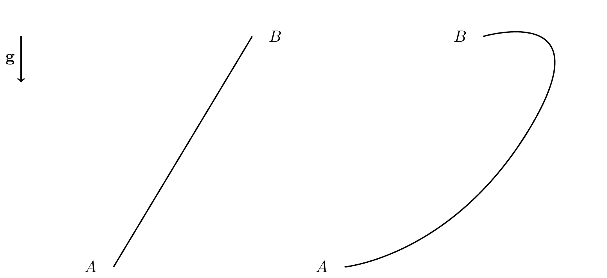

16 Power, Work, and Energy
16.1 Power and Work
The mechanical power of a force \({\bf F}\) acting on a particle with absolute velocity \({\bf v}\) is: \[\begin{align} \mathcal{P} = {\bf F}\cdot{\bf v}. \end{align}\]
The work done by \({\bf F}\) over the interval \([t_1,t_2]\) is: \[\begin{align} W_{{\bf F},12} = \int_{t_1}^{t_2} {\bf F}\cdot{\bf v}\,dt = \int_{t_1}^{t_2}{\bf F}\cdot d{\bf r}, \end{align}\] since \(d{\bf r} = {\bf v}\,dt\). So power is the derivative of work: \(\mathcal{P} = \dot{W}\).
In SI units: work is in Newton meters (Joules) and power in Watts.
Notes:
- There are many representations of this integral depending on the coordinate system:
- Cartesian: \(d{\bf r} = dx{\bf E}_x+dy{\bf E}_y+dz{\bf E}_z\)
- Polar: \(d{\bf r} = dr{\bf e}_r+r\,d\theta{\bf e}_\theta\)
- Serret-Frenet: \(d{\bf r} = ds\,{\bf e}_t\)
- This integral is path dependent — we need to know the particle’s path to compute it.
TipThink!
Question: In what case would the work of a force be zero?
Answer: The work is zero if the force is perpendicular to the displacement/velocity, or if the force is applied at a fixed point.
16.1.1 Example: Particle on a Rail
Consider two points \(A\) and \(B\) in the vertical plane connected by a smooth rail.
TipThink!
Question: What is the work done by forces on an object traveling from \(A\) to \(B\) on (a) a straight rail or (b) a curved path?
Answer: In both cases \({\bf F} = {\bf W}+{\bf N}\). Since \({\bf N}\perp d{\bf r}\), the normal force does no work. The work of weight is: \[\begin{align*} W_{{\bf W},1-2} = \int mg{\bf E}_y\cdot d{\bf r} = mg{\bf E}_y\cdot\Delta{\bf r}_{1-2}. \end{align*}\] \(\Delta{\bf r}_{1-2}\) is the same for both rails, so weight does the same work regardless of path.
TipThink!
Question: What changes if the rail is rough?
Answer: With friction: \[\begin{align*} W_{1-2} = W_{{\bf W},1-2} - \mu_k\int_{s_1}^{s_2}\lnorm{\bf N}\rnorm\,ds. \end{align*}\] Friction work is path dependent and dissipative (\(W_{{\bf F}_f,1-2}<0\)).
16.2 Kinetic Energy
The kinetic energy of a particle: \[\begin{align} T = \frac{m}{2}{\bf v}\cdot{\bf v} = \frac{1}{2}mv^2. \end{align}\]
In different bases: \[\begin{align*} T = \frac{1}{2}m(v_x^2+v_y^2+v_z^2) = \frac{1}{2}m(\dot{r}^2+r^2\dot{\theta}^2+\dot{z}^2). \end{align*}\]
16.3 Energy
Energy is defined as the ability to perform work.
16.4 The Work-Energy Theorem
The rate of change of kinetic energy equals the mechanical power of the resultant force: \[\begin{align} \frac{dT}{dt} = {\bf F}\cdot{\bf v} = \mathcal{P}. \end{align}\]
Proof: \[\begin{align*} \frac{d}{dt}T = \frac{d}{dt}\lp\frac{1}{2}m{\bf v}\cdot{\bf v}\rp = m{\bf a}\cdot{\bf v} = {\bf F}\cdot{\bf v}. \end{align*}\]
Integral form: \[\begin{align} T_2 - T_1 = W_{{\bf F},12} = \int_{{\bf r}_1}^{{\bf r}_2}{\bf F}\cdot d{\bf r}. \end{align}\]
16.5 Conservative Forces
Forces whose work depends only on the endpoints of a path are conservative. Weight (constant force) is conservative; friction is not.
A force \({\bf F}_c\) is conservative if there exists a scalar potential energy \(U = U({\bf r})\) such that: \[\begin{align} {\bf F}_c = -\frac{\partial U}{\partial {\bf r}} = -\nabla U. \end{align}\]
Then: \[\begin{align} W_{1-2} = -U_2+U_1 = -\Delta U. \end{align}\]
If potential energy decreases (\(U_2 \leq U_1\)), the work is positive and kinetic energy increases.
16.5.1 Constant Forces
Constant force \({\bf C}\) is conservative with potential \(U = -{\bf C}\cdot{\bf r}\).
The weight near Earth’s surface: \(U_{\bf W} = mgy\).
16.5.2 Spring Force
The spring force is conservative with potential: \[\begin{align*} U_s = \frac{1}{2}K\varepsilon^2. \end{align*}\] \(U_s > 0\) in both compression and tension — it represents the spring’s capacity to do work.
16.5.3 Gravitational Force
The gravitational force is conservative with: \[\begin{align*} U = -\frac{GM_e m}{r}. \end{align*}\]
Drag, friction, tension in inextensible cables, and normal forces are nonconservative.
16.6 Energy and Its Conservation
If only conservative forces act, define total mechanical energy \(E = T + U\). Then: \[\begin{align*} \dot{T} = -\dot{U} \implies \dot{E} = \dot{T}+\dot{U} = 0. \end{align*}\] \(E\) is conserved when all work-doing forces are conservative.
If nonconservative forces also act: \[\begin{align} E_B - E_A = W_{{\bf F}_{nc},AB}. \end{align}\]
16.6.1 Example: Smooth vs. Rough Rail
Smooth rail: \({\bf F}\cdot{\bf v} = {\bf W}\cdot{\bf v}+{\bf N}\cdot{\bf v} = {\bf W}\cdot{\bf v} = -\dot{U}\), so \(\dot{E} = 0\).
Rough rail: \(\dot{E} = {\bf F}_f\cdot{\bf v} < 0\), so energy bleeds off over time. Integrating: \[\begin{align*} E(t_2) = E(t_1) + W_{{\bf F}_f,1-2} < E(t_1). \end{align*}\]